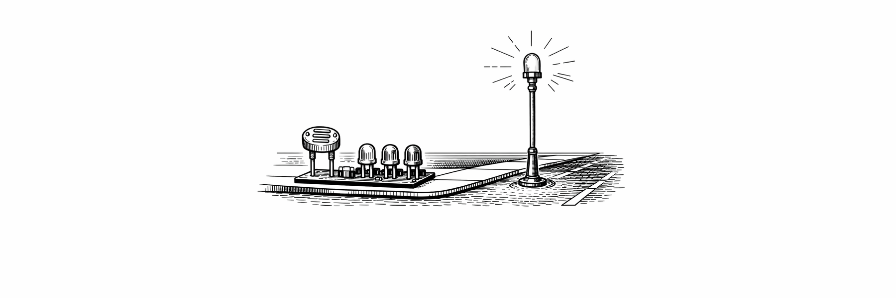

Project
Develop an electronic system capable of activating lighting automatically according to ambient light intensity.
A scale street mock-up was built that integrates an ambient light sensor. The system activates different indicators according to the detected illumination level and in low-light conditions activates a white LED that simulates public lighting.
Electronic system design, circuit assembly, and functional testing.
A functional system for automatic lighting activation in low-light conditions was obtained.